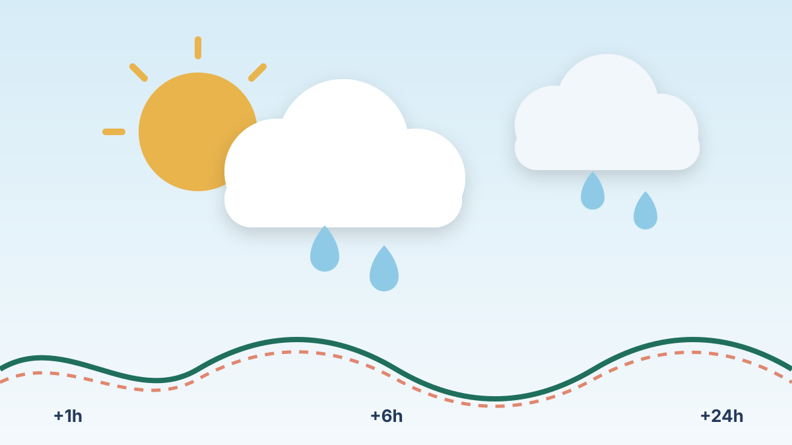

Weather Humidity Forecasting
Forecasting relative humidity 1, 6 and 24 hours ahead with Random Forest, XGBoost, LSTM and a hybrid LSTM-XGBoost model.
- My role
- Built the forecasting models; wrote the Pandas preprocessing pipeline and the stationarity and correlation analysis
- Team
- Team of 4 (IT1244, NUS)
- When
- Mar – May 2025

Overview
Relative humidity matters for weather forecasting, public health and environmental monitoring, but it's hard to predict because weather variables interact in complex, non-linear ways. Using 100,057 hourly observations from 2010 to 2021, we built and compared four machine learning models to forecast humidity 1, 6 and 24 hours ahead, without using current humidity as an input.
The process at a glance
-
Data
- 100,057 hourly readings (2010–2021)
- 6 weather features
-
Explore
- Correlation map
- ACF / PACF: 24-hour cycle
- ADF and KPSS tests
-
Prepare
- Remove impossible values
- Standardise features
- 1, 6 and 24-hour lag windows
- No target leakage
-
Models
- Random Forest baseline
- XGBoost
- LSTM (Keras)
- Hybrid LSTM-XGBoost
-
Tune and validate
- Optuna Bayesian optimisation
- Time-series cross-validation
-
Evaluate
- MAE at each horizon
- Best: XGBoost
What I did
- Explored the data first: correlation matrix, ACF and PACF plots, ADF and KPSS stationarity tests and rolling statistics, which revealed a strong 24-hour cycle.
- Wrote the preprocessing pipeline in Pandas: removed physically impossible readings, standardised features and built 1, 6 and 24-hour lag windows without leaking the target.
- Built a Random Forest baseline, then XGBoost with seasonal, lag, difference and interaction features, validated with time-series cross-validation.
- Built LSTM models in Keras and tuned units, dropout, learning rate, batch size and epochs separately for each horizon using Bayesian optimisation (Optuna).
- Built a hybrid model that feeds patterns learned by the LSTM into a tuned XGBoost model.
Results & conclusions
- XGBoost was the best model at every horizon: MAE 0.046 (1h), 0.064 (6h) and 0.080 (24h)
- Errors comparable to the 5–10% typical of human forecasters
- The hybrid LSTM-XGBoost didn't beat its parts, and we explained why
| Model | 1 hour | 6 hours | 24 hours |
|---|---|---|---|
| Random Forest (baseline) | 0.054 | 0.070 | 0.086 |
| XGBoost | 0.046 | 0.064 | 0.080 |
| LSTM | 0.047 | 0.065 | 0.084 |
| Hybrid LSTM-XGBoost | 0.047 | 0.075 | 0.084 |
Relative humidity runs from 0 to 1, so an MAE of 0.046 means predictions were off by about 4.6 percentage points on average.
Conclusion
XGBoost delivered the lowest error at every horizon. Its tree structure makes the most of engineered lag, difference and interaction features, and its built-in regularisation copes well with noisy weather data. The LSTM matched it at one hour but drifted further out, and the hybrid didn't outperform either model on its own, probably because the extra layer added complexity without new information. All models got worse as the horizon grew, as expected. The biggest limitation was that current humidity wasn't allowed as an input; real forecasting would add it, along with radar or satellite data.
1 hour
6 hours
24 hours
Highlighted bar = best (lowest error) in each group.
What I learnt
Time-series data punishes shortcuts. I learnt to check stationarity and seasonality before modelling, to split data in time order, and to build lag features without leaking the answer into the inputs. I saw that a well-engineered gradient-boosting model can beat a deep network on tabular data, and that a more complex model (our hybrid) has to earn its place on the test set. I also learnt to tune hyperparameters with Bayesian optimisation instead of guesswork. Splitting the work across four people taught me the value of a reproducible notebook with clear run instructions.